Everything for your climate, light, nutrients & water.
GrowCalc bundles six calculators for tents, greenhouses and indoor gardens in one app – from exhaust airflow and VPD to DLI and measuring light with your phone's sensor. Offline, ad-free, with dark mode.
Download APK Source code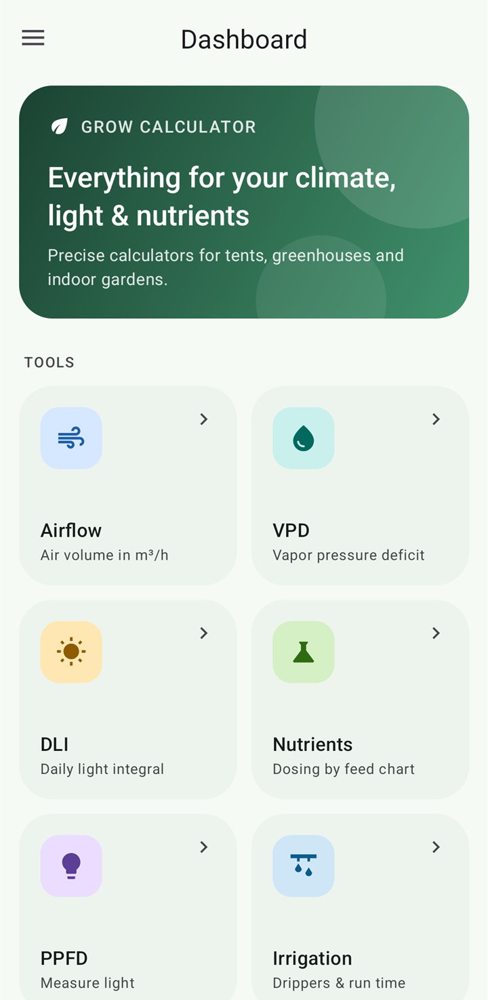
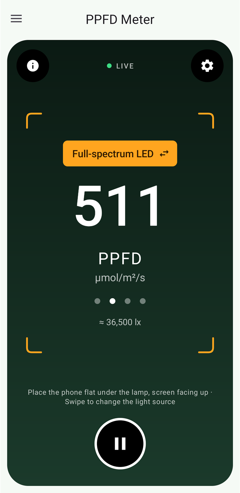
Tools
Each calculator has its own screen and can be opened from the dashboard or the side menu. Tap a tile to learn more.
Airflow
Air volume in m³/h from duct diameter and air velocity.
VPD
Vapor pressure deficit for air and leaf – color-rated from “mold risk” to “wilting risk”.
DLI
Daily light integral from PPFD and photoperiod, with quick picks for 12–24 h.
Nutrient dosing
Amounts from manufacturer feed charts, with Ca:Mg correction based on your water analysis.
PPFD light meter
Live measurement with your phone's light sensor, converted to µmol/m²/s.
Irrigation
Water per pot from drippers and run time – including a daily schedule and tank range.
Features in detail
All calculations are documented openly and covered by unit tests. Results are color-coded so you can see at a glance whether you're in the green zone.
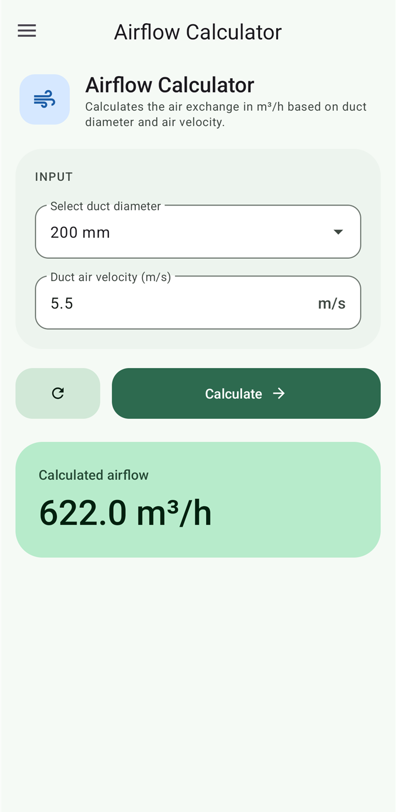
Airflow calculator
How much air does your exhaust system really move? Pick the duct diameter, enter the air velocity measured inside the duct (e.g. with an anemometer) and GrowCalc calculates the airflow in m³/h. That way you can check whether fan and carbon filter match your tent size and whether the air is exchanged often enough.
- Common duct diameters from 125 to 300 mm
- Velocity in m/s – with a dot or a comma as decimal separator
- Instant result in m³/h, one tap resets everything
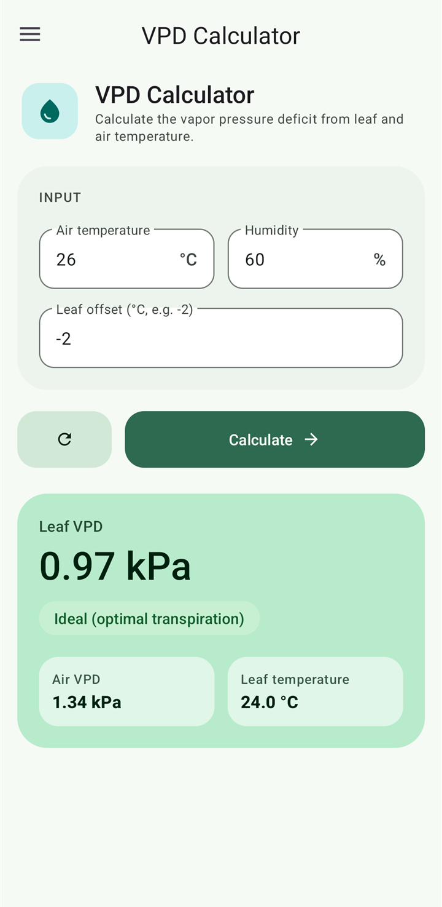
VPD calculator
The vapor pressure deficit shows how strongly the air “pulls” water out of the plant – which makes it far more meaningful than relative humidity alone. From air temperature, relative humidity and an optional leaf temperature offset, GrowCalc calculates air VPD, leaf VPD and leaf temperature.
| < 0.4 kPa | Low – risk of mold |
| 0.4 – 1.2 kPa | Ideal – optimal transpiration |
| 1.2 – 1.6 kPa | High – stress |
| > 1.6 kPa | Very high – risk of wilting |
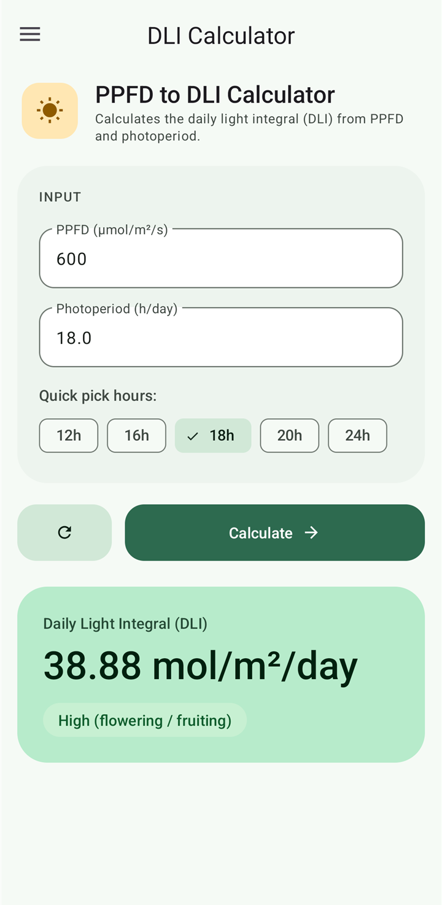
DLI calculator
The daily light integral tells you how much usable light your plants receive over the whole day. Enter the light intensity (PPFD) and the photoperiod – quick-pick chips for 12, 16, 18, 20 and 24 hours cover the typical light cycles. You can measure the PPFD value directly with the PPFD light meter.
| < 10 | Low – shade plants / rooting |
| 10 – 20 | Medium – vegetative growth |
| 20 – 40 | High – flowering / fruiting |
| > 40 | Very high – CO₂ supplementation worthwhile |
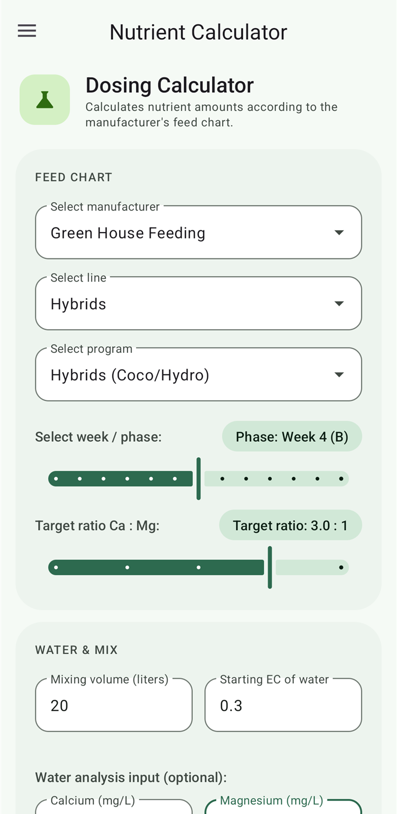
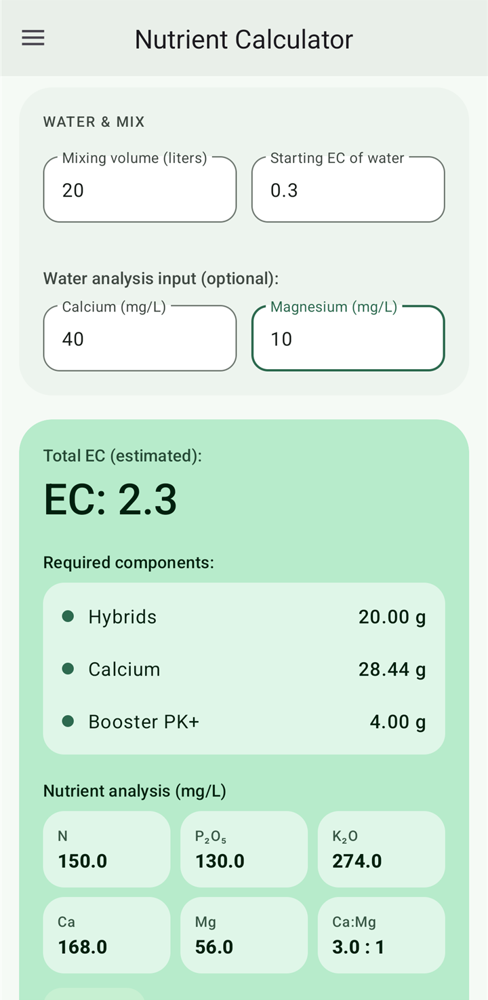
Nutrient dosing calculator
Choose manufacturer, product line, program and the current week – GrowCalc works out the fertilizer amounts for your mixing volume and updates the result live with every change. Using your water analysis (calcium and magnesium), the calcium dose is adjusted to reach the desired Ca:Mg ratio.
- Feed charts from Green House Feeding, Athena and Advanced Nutrients
- Week/phase slider and target Ca:Mg ratio (2.0 – 3.5 : 1)
- Takes the starting EC and Ca/Mg of your tap water into account
- Estimated total EC and analysis of the final solution: N, P₂O₅, K₂O, Ca, Mg in mg/L
- Automatically adds Epsom salt if there is too little magnesium
PPFD light meter
Your phone becomes a light meter: place it flat under the lamp, screen facing up, and GrowCalc shows the photosynthetic photon flux density in µmol/m²/s live. The ambient light sensor measures lux; the app converts it to PPFD for the selected light source and smooths the reading.
- Switch the light source by swiping or tapping: sunlight, full-spectrum LED, HPS, fluorescent
- Large round button to hold the value or keep measuring
- Warning when the sensor saturates and the reading becomes unreliable
- Calibration factor in the settings – e.g. matched against a real quantum sensor
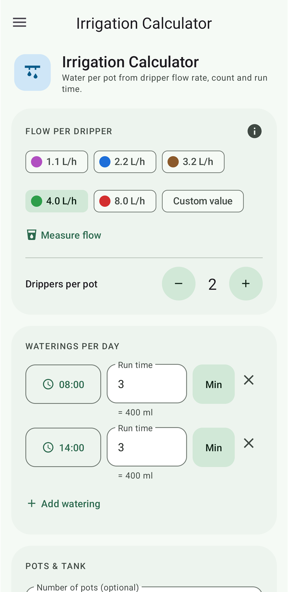
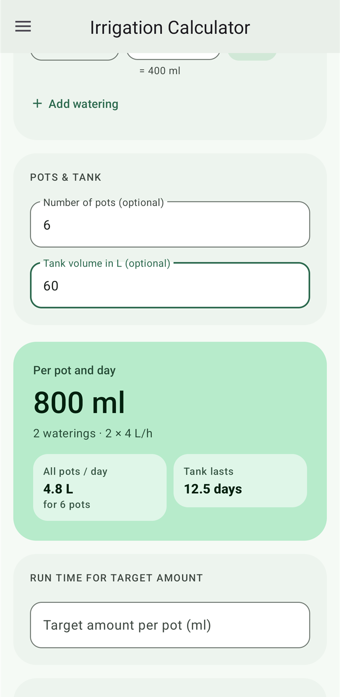
Irrigation calculator
Plan your drip irrigation: from the flow rate per dripper, the number of drippers per pot and the run time, GrowCalc calculates the amount of water per pot – for each single watering and for the whole day. Add the number of pots and your tank volume to see how long your tank will last.
- Color-coded presets for common drippers (1.1 – 8.0 L/h) or a custom value
- “Measure flow”: determine the real flow rate with a measuring cup
- Multiple waterings per day with time and run time in seconds or minutes
- Reverse mode: calculate the run time for a target amount and apply it directly
- Save setups – your last inputs are kept
Gallery
Material 3 design with a custom color scheme – light and dark. Tap to enlarge.


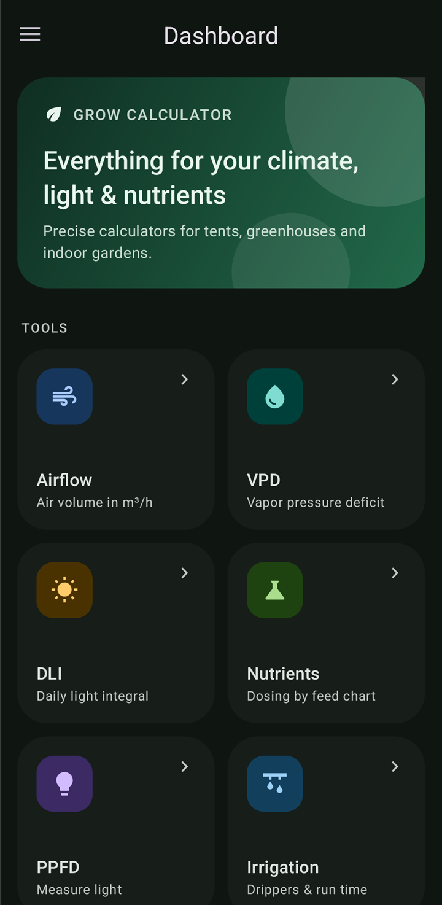

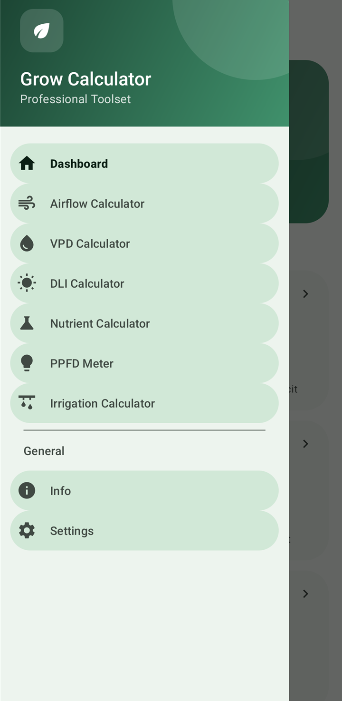


Highlights
Small things that make everyday life in the grow room easier.
Installation
Requirement: Android 7.0 (API 24) or newer.
- Download
GrowCalc-<version>.apkfrom the GitHub releases on your phone. - Tap the file and, the first time, allow “Install unknown apps” for your browser or file manager.
- Install and open GrowCalc. Updates are installed the same way – your data is kept.
git clone https://github.com/TheDude1996/GrowCalc.git
cd GrowCalc
./gradlew installDebug # Windows: gradlew.batFAQ
Is the app available in English?
Yes. Since version 0.5.0 GrowCalc speaks English and German and follows your device language automatically: German devices get German, all others English. On Android 13 and newer you can also pick the language per app under Settings → Apps → GrowCalc → Language.
How accurate is the PPFD measurement with a phone?
Phone light sensors measure lux and are not designed for plant lighting. The conversion therefore gives guide values that can deviate noticeably depending on the device. With the calibration factor in the settings you can match the reading to a real quantum meter. In very bright light the sensor can saturate – the app warns you when that happens.
Which VPD value is right?
As a rough guide: 0.4–0.8 kPa for clones and young plants, 0.8–1.2 kPa for vegetative growth and flowering. GrowCalc rates the leaf VPD; the leaf offset (usually −1 to −3 °C) accounts for leaves being cooler than the air.
Why isn't my nutrient brand included?
So far, feed charts from Green House Feeding, Athena and Advanced Nutrients are included. More brands can be added – suggestions with a link to the official feed chart are welcome as an issue or pull request.
Does the app cost anything or collect data?
No. GrowCalc is free, ad-free and open source under the GPL-3.0. The app needs no permissions and has no internet access.
Is GrowCalc on the Play Store or available for iOS?
The app is currently distributed as an APK via GitHub. An iOS version is not planned.